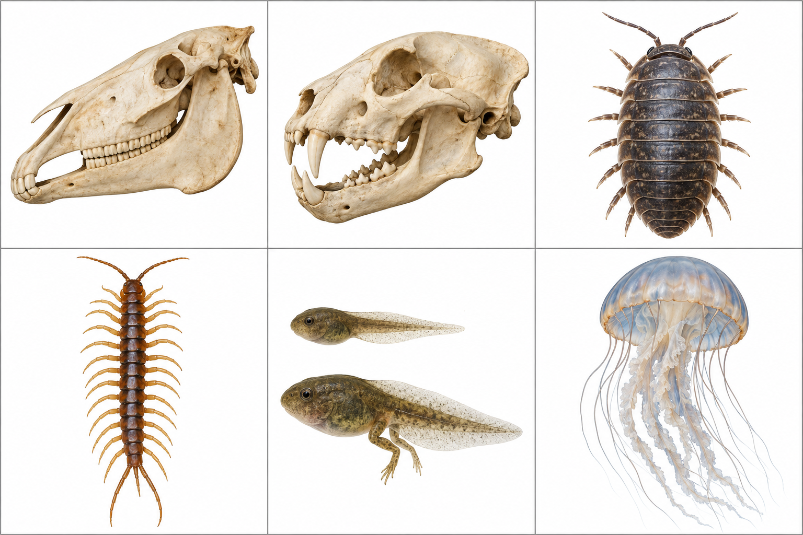

中1 理科・生物
動物のなかま
身近な姿から、つくりを知る

水の中にいるから、魚？
模式図・比較図（実物の大きさの比率とは異なります）
すむ場所はどちらも水中
分類するには体のつくりや呼吸も調べる
魚の表面と、呼吸
模式図・比較図（実物の大きさの比率とは異なります）
体の表面うろこでおおわれる
呼吸する器官えら
なかまの名前魚類
オタマジャクシから、カエルへ

模式図・比較図（実物の大きさの比率とは異なります）
子の呼吸主にえら
親の呼吸肺と皮膚
なかまの名前両生類
乾いた、うろこのある体
模式図・比較図（実物の大きさの比率とは異なります）
体の表面うろこでおおわれる
呼吸する器官肺
なかまの名前は虫類
羽毛でおおわれた体
模式図・比較図（実物の大きさの比率とは異なります）
体の表面羽毛
呼吸する器官肺
なかまの名前鳥類
毛と、乳で育てる特徴
模式図・比較図（実物の大きさの比率とは異なります）
体の表面毛がある
子の育て方乳で育てる
なかまの名前哺乳類
イルカが水面に上がる理由
模式図・比較図（実物の大きさの比率とは異なります）
呼吸する器官肺
子の育て方乳で育てる
だから哺乳類
子の生まれ方をくらべる
模式図・比較図（実物の大きさの比率とは異なります）
卵を産む卵生
母体内で育ててから産む胎生
まわりの温度が変わると
模式図・比較図（実物の大きさの比率とは異なります）
体温が外の温度で変わりやすい変温動物
体温をほぼ一定に保つ恒温動物
エビとイルカを、説明してみよう
模式図・比較図（実物の大きさの比率とは異なります）
エビは無脊椎動物・節足動物
イルカは脊椎動物・哺乳類
理由も言おう体のつくりや、子の育て方